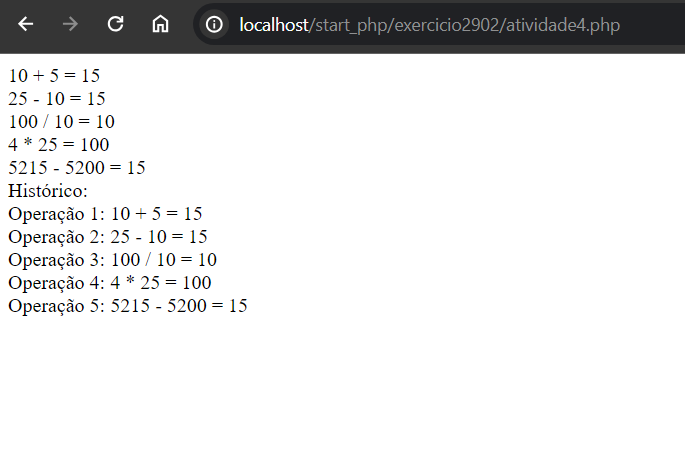

Modelagem de objetos em PHP
Atividade 1
Crie uma classe Contador, que encapsule um valor usado para
contagem de itens ou eventos. A classe deve oferecer métodos que
devem:
a- Zerar;
b- Incrementar;
c- Retornar o valor do contador.
Atividade 2
Crie uma classe que modele uma bola:
a. Atributos
i. Cor
ii. Circunferência
iii. Material
b. Métodos
i. Trocar Cor
ii. Mostrar cor
Atividade 3
Crie uma classe para implementar uma conta corrente. A classe
deve possuir os seguintes atributos:
a. Número da conta
b. Nome do correntista
c. Saldo
Os métodos são os seguintes:
a. Alterar nome
b. Deposito
c. Saque
No construtor, o saldo é opcional, com valor padrão zero e os
demais atributos são obrigatórios. A conta não pode ficar com saldo
negativo.
Atividade 4
Crie uma classe para representar uma Calculadora.
Esta classe
deve conter um atributo que servirá para armazenar o histórico das
operações e seus respectivos resultados.
a. Esta classe deve conter as operações de somar, multiplicar,
dividir e diminuir.
b. Esta classe deve iniciar com o histórico vazio
c. Esta classe deve conter uma ação para visualizar o histórico.

Atividade 5
Faça um programa completo utilizando classes e métodos que:
a. Possua uma classe chamada BombaCombustivel, com no
mínimo esses atributos:
i. tipoCombustivel.
ii. valorLitro.
iii. quantidadeCombustivel.
b. Possua no mínimo esses métodos:
i. abastecerPorValor método onde é informado o
valor a ser abastecido e mostra a quantidade de litros
que foi colocada no veículo
ii. abastecerPorLitro método onde é informado a
quantidade em litros de combustível e mostra o valor a
ser pago pelo cliente.
iii. alterarValor altera o valor do litro do combustível.
iv. alterarCombustivel altera o tipo do combustível.
v. alterarQuantidadeCombustivel altera a
quantidade de combustível restante na bomba.
OBS: Sempre que acontecer um abastecimento é necessário
atualizar a quantidade de combustível total na bomba.
Não deve ser
possível abastecer se não tiver gasolina suficiente na bomba.
Atividade 6
Implemente uma classe chamada Carro com as seguintes
propriedades:
a. Um veículo tem um certo consumo de combustível (medidos
em km / litro) e uma certa quantidade de combustível no
tanque.
b. O consumo é especificado no construtor e o nível de
combustível inicial é 0.
c. Forneça um método andar() que simula o ato de dirigir o
veículo por uma certa distância, reduzindo o nível de
combustível no tanque de gasolina.
d. Forneça um método obterGasolina(), que retorna o nível atual
de combustível e forneça um método adicionarGasolina(),
para abastecer o tanque.

*Devido a incompatibilidade do pages com PHP o código original da atividade está comentado no codígo desta atividade no github.